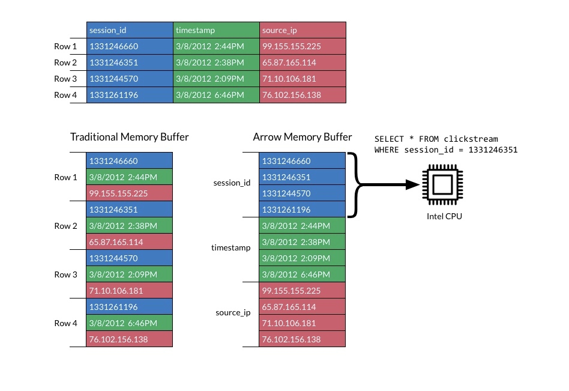
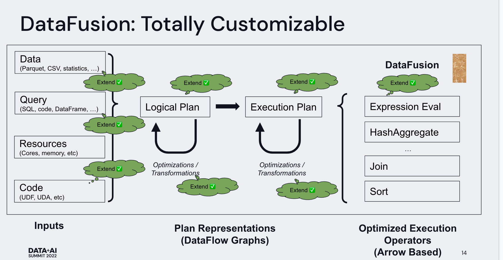

如何快速打造一个高性能数据库原型
作者: 康凯森
日期: 2022-11-06
分类: OLAP
在上篇博客 Data-Parallel Actors：千行代码构建高性能 OLAP 数据库 中，我提出开源数据库会越来越模块化，打造一个高性能的数据库原型会越来越简单，下图是一个利用 DPA 和 一些开源系统打造的数据库架构示意，可能只需要 1 个或者几个人月，就可以打造出这个原型，并且在 SSB，TPC-H,TPC-DS 等标准测试集上取得不错的性能。下面会对图中的一些系统进行介绍。

查询优化 Apache Calcite
Apache Calcite 网上相关的资料已经很多了，这里就不过多介绍了。 Calcite 相比 StarRocks 的优化器扩展性会更好，但是性能不及 StarRocks 的优化器。
架构

Calcite 的核心是优化器，同时支持 RBO 和 CBO，包括 Catalog, SQL parser, SQL validator, Query Optimizer，JDBC Server 和 内置的执行器
可扩展性
Calcite 的目标是成为一个通用的查询优化器，可以被各种系统使用，所以在扩展性上做的比较好，开发者在使用 Calcite 时对以下部分都可以进行扩展：
- relational operators
- planner rules
- cost model
- statistics
- 元数据：支持 行数，基数，选择度，唯一性等很多元数据都可以定义
Built-in SQL implementation
Calcite 也内置了一套 执行器，可以执行所有的算子和表达式。Calcite 会生成 java 代码，然后编译，并在 JVM 中执行。Calcite 就利用了 Janino 库来将优化后的方案编译成 JVM Bytecode 来执行，虽然性能比较低下，但是可以作为默认的保底和 fall-back 的方式。
流行度
Calcite 在工业界已经被大量采用，许多项目都使用 Apache Calcite 实现 SQL parsing， 查询优化，数据联邦，物化视图重写，知名的项目有 Apache Hive, Apache Drill, Apache Flink, Apache Kylin, Apache Druid, Dremio 等。
查询执行 Velox
Velox 是由 Mate 开源的执行引擎，目标是想打造一个统一的高性能 C++ 执行引擎，整体实现和 StarRocks 的执行引擎很类型，亮点不多。 可以参考 Velox 的论文，也可以参考之前我对 StarRocks 执行引擎的介绍：
Velox 的执行引擎，和 StarRocks 主要包括下面几部分：
- Type
- 兼容 Arrow 的列式布局
- 向量化的表达式计算
- 标量和聚合函数
- 向量化算子
- 序列化
- 资源管理
流行度
Velox 开源不久，还没有完全成熟，目前主要和是 Presto 和 Spark 项目合作，一起在搞。
内存存储 Apache Arrow
Apache Arrow 项目的目标是成为一个跨平台，跨语言的列式内存格式和磁盘格式 （Apache Parquet），并以此基础，实现了基于内存的查询引擎，最终成为一个内存数据处理的标准。

上图是 Arrow 的列式内存布局。
网络传输 Apache Arrow Flight
基于 grpc 和 arrow 列式格式的网络传输框架, 下面两个图是个简单示意，具体可以参考：https://www.dremio.com/subsurface/an-introduction-to-apache-arrow-flight-sql/


DataFusion
基于 apache arrow 实现的 可扩展的查询引擎，包括查询优化和查询执行框架。
下图是 Arrow 和 DataFusion 逐步向 DataBase 演化的路径：

下图是 DataFusion 的框架，核心是可扩展：

流行度
Apache Arrow 已经被很多业界项目广泛采用，比如 Velox，Spark, StarRocks, Snowflake 等系统都使用了 Apache Arrow。
分布式框架 DPA
对分布式查询的相关功能进行了统一和抽象：数据复制，更新一致性，容错，查询负载均衡，弹性，持久化等。 可以参考之前的文章：Data-Parallel Actors：千行代码构建高性能 OLAP 数据库
RocksDB
一个基于 LSM tree 的 KV store，被大量用来打造分布式 KV 存储或者存储元数据。
序列化
常量有 json，Protobuf 等协议，业内已经有大量的成熟框架。
打造一个成熟的数据库的难点有哪些
有人会问，打造一个数据库原型如此简单的话，那么数据库公司花费数十人年，数百人年，甚至数千人年都是在做什么。 下面文章我会回答这个问题，为什么打造一个成熟数据库如此困难，为什么数据库是一个如此复杂的工程。
参考资料
- Apache Calcite 论文：https://arxiv.org/pdf/1802.10233.pdf
- Apache Calcite 介绍：https://www.slideshare.net/JordanHalterman/introduction-to-apache-calcite
- Velox 论文：https://vldb.org/pvldb/vol15/p3372-pedreira.pdf
- Apache Arrow Flight 介绍：https://www.dremio.com/subsurface/an-introduction-to-apache-arrow-flight-sql/
- Arrow-datafusion 介绍：https://docs.google.com/presentation/d/1q1bPibvu64k2b7LPi7Yyb0k3gA1BiUYiUbEklqW1Ckc/view
欢迎来知识星球和我交流